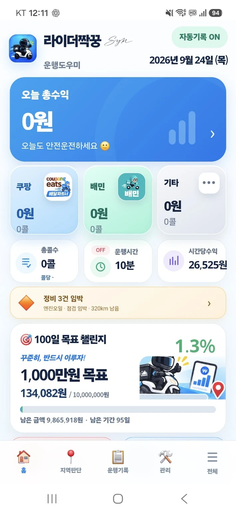
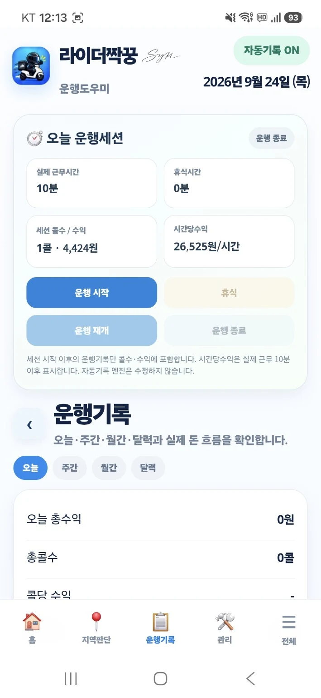
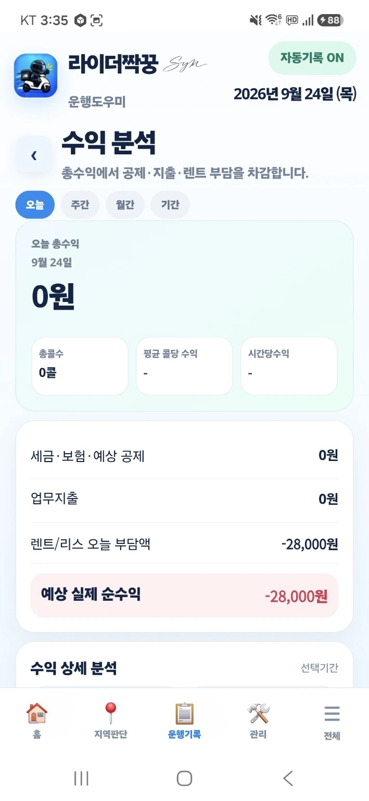
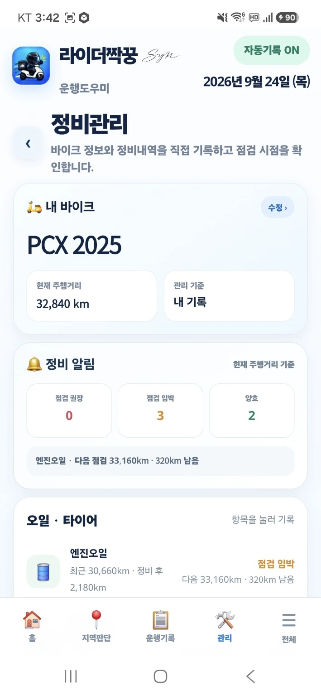
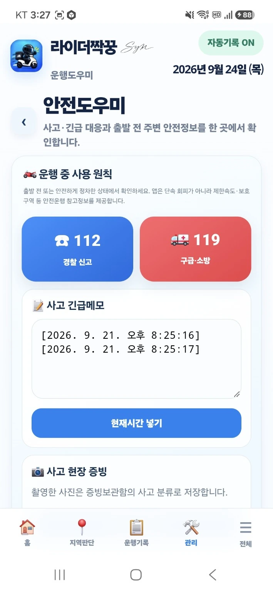

HOME
오늘 운행 한눈에
총수익, 건수, 운행시간, 시간당수익과 목표를 확인합니다.
라이더짝꿍은 배달 라이더가 운행 중 반복해서 확인하고 기록해야 하는 일을 줄이기 위해 만든 메인 운행도우미입니다. 자동기록, 수익분석, 운행기록, 목표관리, 지역판단, 바이크관리, 안전도우미와 짝꿍내비를 한곳에서 사용할 수 있습니다.
처음 설치한 뒤 한 번만 설정해두면 운행 중 반복해서 만질 부분을 줄일 수 있습니다.
공식 APK를 설치하고 앱을 실행합니다.
자동기록·위치·알림 등 사용할 기능에 필요한 권한을 확인합니다.
홈에서 운행시간과 자동기록 상태를 확인합니다.
배달 후 수익·건수·운행기록이 정상 반영됐는지 확인합니다.
기능 이름만이 아니라 실제 운행에서 어떤 일을 줄여주는지 기준으로 정리했습니다.
쿠팡이츠 배달 완료 수익과 건수를 자동으로 기록해 반복 입력을 줄입니다. 현재 정상 작동 기준으로 보호·운영 중인 기능입니다.
오늘 총수익, 건수, 운행시간, 시간당수익과 기간별 흐름을 확인해 실제 운행 성과를 빠르게 파악합니다.
목표금액과 현재 누적수익을 비교해 달성률, 남은 금액과 남은 기간을 한눈에 확인합니다.
활동지역과 선호·주의·회피 기준을 활용하는 기능으로 현재 테스트·보완 중입니다. 완성 기능으로 안내하지 않습니다.
처음 현재 주행거리를 설정하면 이후 라이더짝꿍 운행거리를 자동 누적해 매번 km를 직접 입력하지 않고 정비주기를 관리합니다.
전방·후면 단속경고, 긴급연락, 사고메모·사진, 위험도로 메모 등 실제 운행 중 필요한 안전 기능을 모아둡니다.
메인폰에서 확인한 목적지를 보조폰으로 보내 길안내를 이어줍니다. 외부 내비를 사용할 수 있고, 개발·테스트 구성에서는 별도 설치한 배달내비와의 연동도 확인 중입니다.
정산, 주유, 정비, 렌트·리스, 증빙과 데이터 백업까지 운행 외 관리 업무를 한 앱에서 이어서 처리합니다.
현재 공개 APK와 개발 중 화면은 버전에 따라 일부 차이가 있을 수 있습니다.

총수익, 건수, 운행시간, 시간당수익과 목표를 확인합니다.

자동기록과 직접 입력한 수입을 날짜별로 확인합니다.

기간별 수익과 실제 돈의 흐름을 확인합니다.

자동 누적 주행거리와 정비주기를 연결해 점검 시점을 관리합니다.

메인폰·보조폰 역할과 연결 상태를 관리합니다.

긴급연락과 사고 관련 기능을 빠르게 사용할 수 있습니다.
자주 사용하는 기능부터 실제 순서대로 정리했습니다.
자동기록 ON 여부와 접근성 서비스가 켜져 있는지 먼저 확인합니다. 쿠팡이츠 배달 완료 후 바로 반영되지 않으면 운행기록도 함께 확인합니다.
메인폰·보조폰 역할이 올바른지, 최초 페어링이 완료됐는지, 두 기기에 연결됨이 표시되는지 순서대로 확인합니다.
바이크관리의 현재 기준 주행거리를 확인하고 실제 계기판과 차이가 있다면 보정 기능으로 기준을 맞춘 뒤 다시 누적합니다.
앱 내부 브라우저에서 다운로드가 제한될 수 있습니다. Chrome 또는 Samsung Internet에서 공식 홈페이지를 열어 다시 시도합니다.
내부 개발 버전과 실제 공개 다운로드 버전은 다를 수 있습니다.
현재 홈페이지 공개 테스트본입니다. 앞으로 공개 버전이 올라가도 같은 버튼에서 최신 공개본을 받습니다.